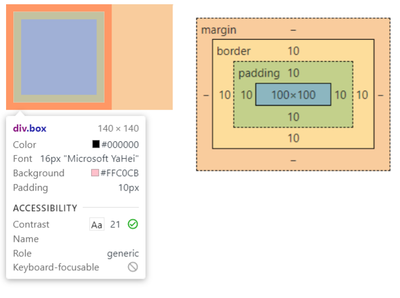
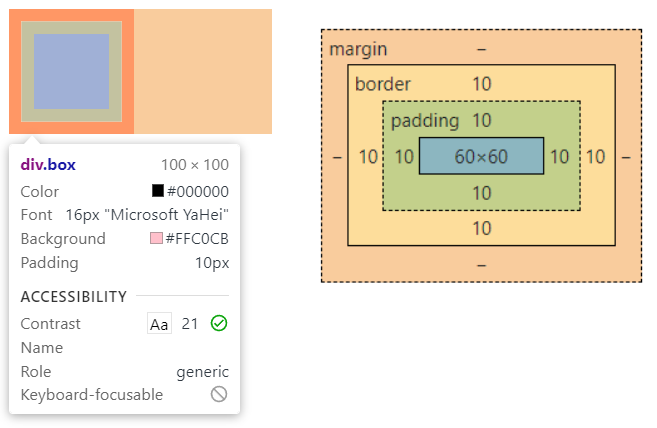
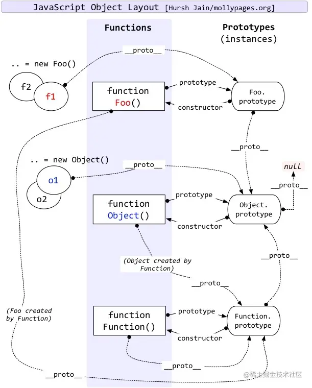

前端知识点1
HTML
行内元素，块状元素
- 行内元素有：
a b span img input select strong - 块级元素有：
div ul ol li dl dt dd h1 h2 h3 h4 h5 h6 p
label作用
label标签来定义表单控件的关系：当用户选择label标签时，浏览器会自动将焦点转到和label标签相关的表单控件上
1 | <!-- 使用方法1 --> |
常用的meta标签有哪些
meta 标签由 name 和 content 属性定义，用来描述网页文档的属性，比如网页的作者，网页描述，关键词等。
常用的meta标签：
charset，用来描述HTML文档的编码类型：
1
<meta charset="UTF-8" >
keywords，页面关键词：
1
<meta name="keywords" content="关键词" />
description，页面描述：
1
<meta name="description" content="页面描述内容" />
refresh，页面重定向和刷新：
1
<meta http-equiv="refresh" content="0;url=" />
viewport，适配移动端，可以控制视口的大小和比例：
1
<meta name="viewport" content="width=device-width, initial-scale=1, maximum-scale=1">
搜索引擎索引方式：
1
<meta name="robots" content="index,follow" />
从输入url到页面上都发生了什么，如何渲染页面。
- URL解析，获取协议，主机，端口， 路径（path）
- DNS域名解析，获取主机 IP 地址
- 浏览器主机根据ip地址与服务器建立TCP连接，发送HTTP请求
- 服务器响应报文通过TCP连接处理请求
- 浏览器解析HTML文档，构件DOM树，下载资源，执行js脚本，渲染页面
https://juejin.cn/post/6844904142742224904#heading-1
https://juejin.cn/post/6844903832435032072#heading-6
CSS
position
- static(默认)：正常文档流，无定位
- relative：正常文档流，相对自身定位
- absolute：脱离文档流，相对上级有 position 属性且值不为 static 的元素定位，若没有则相对 body 定位
- fixed：脱离文档流，相对于浏览器窗口定位
- sticky：根据窗口滚动自动切换 relative 和 fixed，由 top 决定
说一下你对盒模型的理解
标准模式：元素的真实占位宽高 = content(width,height) + border + padding
1
2
3
4
5
6.box {
width: 100px;
height: 100px;
border: 10px solid red;
background: pink;
}
怪异模式：元素的真实占位宽高 = content(包含border和padding)
1
2
3
4
5
6
7
8.box {
width: 100px;
height: 100px;
border: 10px solid red;
background: pink;
/* 怪异模式 */
box-sizing: border-box;
}
CSS box-sizing 属性切换模式：content-box就是标准模式，border-box就是怪异模式
CSS隐藏区别
- visibility:hidden：隐藏元素，会在文档流中占位，隐藏后不能触发点击事件(触发重绘)
- display:none：隐藏元素，会从页面中删除掉(触发重排和重绘)
- opacity:0：透明，会继续在文档流中占位，由于作用于元素自身，所以子元素会继承，全部变透明，透明后可以触发点击事件(触发重绘)
- rgba(0,0,0,0)：透明，会继续在文档流中占位，由于只作用于颜色或背景色，所以子元素不会继承，透明后可以触发点击事件(触发重绘)
回流(重排)与重绘 (Reflow & Repaint)
回流必将引起重绘，重绘不一定会引起回流
- 回流(重排) (Reflow)
当Render Tree中部分或全部元素的尺寸、结构、或某些属性发生改变时，浏览器重新渲染部分或全部文档的过程称为回流。- 重绘 (Repaint)
当页面中元素样式的改变并不影响它在文档流中的位置时（例如：color、background-color、visibility等），浏览器会将新样式赋予给元素并重新绘制它，这个过程称为重绘。
简单总结：会引起元素位置变化的就会reflow；不会引起位置变化的，只是在以前的位置进行改变背景颜色等，只会repaint。
BFC
BFC是什么
BFC 全称：Block Formatting Context， 名为 “块级格式化上下文”。
简单来说就是，BFC是一个完全独立的空间（布局环境），让空间里的子元素不会影响到外面的布局。
触发BFC使用的CSS属性
- float值不为none
- overflow值为auto或hidden
- display值为inline-block、table-cell、flex
- position值为absolute或fixed
BFC特性规则
- BFC元素垂直方向的边距会发生重叠，由 margin 决定
- BFC的区域不会与浮动元素的区域重叠
- BFC是一个独立的容器，子元素不会影响外面元素
- 计算BFC高度的时候，浮动元素也会参与计算
BFC使用场景
高度塌陷
外边距重叠
两栏布局（左边定宽，右边自适应），只需要给右边创建BFC即可
清除浮动
利用BFC清除浮动（父元素）
清除浮动
常见的水平垂直方式
固定宽高
absolute + 负margin
1 | .content { |
absolute + margin auto
1 | .content { |
不固定宽高
absolute + translate
1 | .content { |
flex
1 | .box { |
alt和title的作用及区别
- alt是图片不能正常显示时出现的提示信息
- title是鼠标移到元素上时显示的提示信息
link 和 @import
- link是HTML提供的标签，不仅可以加载 CSS 文件，还可以定义 RSS、rel 连接属性等；@import是CSS提供的语法规则，只有导入样式表的作用
- 加载页面时，link标签引入的 CSS 被同时加载；@import引入的 CSS 将在页面加载完毕后被加载
JavaScript
基本数据类型
8种基础数据类型： Undefined 、 Null 、 Boolean 、 Number 、 String 、 Object 、 Symbol 、 BigInt
其中 Symbol 和 BigInt 是 ES6 新增的数据类型
- Symbol 代表独一无二的值，最大的用法是用来定义对象的唯一属性名。
- BigInt 可以表示任意大小的整数。
数据类型的判断
typeof：能判断所有值类型，函数。不可对 null、对象、数组进行精确判断，因为都返回 object
1
2
3
4
5
6
7
8
9
10
11console.log(typeof undefined); // undefined
console.log(typeof 2); // number
console.log(typeof true); // boolean
console.log(typeof "str"); // string
console.log(typeof Symbol("foo")); // symbol
console.log(typeof 2172141653n); // bigint
console.log(typeof function () {}); // function
// 不能判别
console.log(typeof []); // object
console.log(typeof {}); // object
console.log(typeof null); // objectinstanceof：能判断对象类型，不能判断基本数据类型，其内部运行机制是判断在其原型链中能否找到该类型的原型。
(其实现就是顺着原型链去找，如果能找到对应的 Xxxxx.prototype 即为 true )1
2
3
4
5class People {}
class Student extends People {}
const vortesnail = new Student();
console.log(vortesnail instanceof People); // true
console.log(vortesnail instanceof Student); // trueObject.prototype.toString.call：所有原始数据类型都是能判断的，还有 Error 对象，Date 对象等。
1
2
3
4
5
6
7
8
9
10Object.prototype.toString.call(2); // "[object Number]"
Object.prototype.toString.call(""); // "[object String]"
Object.prototype.toString.call(true); // "[object Boolean]"
Object.prototype.toString.call(undefined); // "[object Undefined]"
Object.prototype.toString.call(null); // "[object Null]"
Object.prototype.toString.call(Math); // "[object Math]"
Object.prototype.toString.call({}); // "[object Object]"
Object.prototype.toString.call([]); // "[object Array]"
Object.prototype.toString.call(function () {}); // "[object Function]"
原型,原型链

- js对象分为：函数对象（Function）和普通对象，每个对象都有隐式原型
__proto__属性，但是只有函数对象才有显式原型prototype属性；__proto__属性是一个对象，它有两个属性，constructor和__proto__；prototype有一个默认的constructor属性，用于记录实例是由哪个构造函数创建。- 隐式原型
__proto__的属性值指向它的构造函数的显式原型prototype属性值
1 | function Person () {} |
https://juejin.cn/post/6844903989088092174
闭包
闭包是指有权访问另一个函数作用域中变量的函数
创建闭包的最常见的方式就是在一个函数内创建另一个函数，创建的函数可以访问到当前函数的局部变量。
常用用途:
- 闭包的第一个用途是使我们在函数外部能够访问到函数内部的变量。通过使用闭包，可以通过在外部调用闭包函数，从而在外部访问到函数内部的变量，可以使用这种方法来创建私有变量。
- 闭包的另一个用途是使已经运行结束的函数上下文中的变量对象继续留在内存中，因为闭包函数保留了这个变量对象的引用，所以这个变量对象不会被回收。
https://juejin.cn/post/6937469222251560990#heading-1
Map和Set的区别
Map字典
- 是一种类对象的数据结构
- 以键值对的形式存储数据
- 存储的数据不会重复
- 数据的键或值可以是任意值或对象
- 存储的数据是有序的
- 初始化的值为二维数组
Set 集合
- 是一个类数组对象
- 存储的数据不会重复
- 不是以键值对的形式存储，而是以
[value，value]的形式 - 初始化的值为一维数组
共同点：集合、字典都可以存储不重复的值
不同点：集合是以[值，值]的形式存储元素，字典是以[键，值]的形式存储
Map和Object的区别
- Object的键只能是String或者Symbols,Map的键可以是任意值(包含函数、对象或任意基本类型)
- Object的键是无序的，Map的key是有序的，当迭代的时候，以插入的顺序返回key值。
- Object使用Object.key(obj).length得到键值对的个数，Map通过size属性可以得到Map中键值对的个数。
0.1+0.2 ! == 0.3
因为 JavaScript 中使用基于 IEEE 754 标准的浮点数运算，0.1 的二进制值是个无限循环小数，而 IEEE 754 标准中的尾数位只能保存 52 位 有效数字，所以精度丢失，所以会产生舍入误差
解决：
- 在计算前将值转换为整数 再进行计算
- 对结果进行位截取后进行比较
跨域的常用方式
跨域
跨域，是指浏览器不能执行其它网站的脚本。它是由浏览器的同源策略造成的，是浏览器对javascript实施的安全限制
所谓同源，就是域名、协议、端口均相同，如下为不同：
1 | http://www.123.com/index.html 调用 http://www.123.com/abc.do （非跨域） |
解决方案
跨域
cors,jsonp
前后端分离vue，react配置代理
map和foreach有什么区别
- forEach()方法不会返回执行结果，而是undefined。而且会修改原来的数组。
- map()方法会得到一个新的数组并返回
说一下数组如何去重,你有几种方法?
1 | // 利用 ES6 set 关键字 |
箭头函数和普通函数有什么区别?
- 箭头函数比普通函数简洁
- 箭头函数没有自己的this
- 箭头函数继承来的this指向永远不会改变(包括call、apply、bind)
- 箭头函数没有自己的arguments
New操作符做了什么事情?
- 首先创建了一个新的空对象
- 设置原型，将对象的原型设置为函数的 prototype 对象。
- 让函数的 this 指向这个对象，执行构造函数的代码（为这个新对象添加属性）
- 判断函数的返回值类型，如果是值类型，返回创建的对象。如果是引用类型，就返回这个引用类型的对象。
实现1
1 | function myNew(context) { |
实现2
1 | function objectFactory() { |
Promise的all和race有什么区别
- Promise.all接收数组，只有等所有的异步请求全部跑完才能得到数据。
- Promise.race接收数组，只要有一个异步请求跑完就立马结束并得到这个数据。
防抖、节流
Vue
Computed 和 Watch 的区别
Computed
- 支持缓存，只有依赖的数据发生了变化，才会重新计算
- 不支持异步，当
Computed中有异步操作时，无法监听数据的变化
Watch
- 不支持缓存，数据变化时，它就会触发相应的操作
- 支持异步监听
运用场景
- 当需要进行数值计算,并且依赖于其它数据时，应该使用 computed，因为可以利用 computed 的缓存特性，避免每次获取值时都要重新计算。
- 当需要在数据变化时执行异步或开销较大的操作时，应该使用 watch，使用 watch 选项允许执行异步操作 ( 访问一个 API )，限制执行该操作的频率，并在得到最终结果前，设置中间状态。
Computed 和 Methods 的区别
computed计算属性是基于它们的依赖进行缓存的，只有在它的相关依赖发生改变时才会重新求值method调用总会执行该函数
常见的事件修饰符及其作用
- .stop：等同于 JavaScript 中的 event.stopPropagation() ，防止事件冒泡；
- .prevent ：等同于 JavaScript 中的 event.preventDefault() ，防止执行预设的行为（如果事件可取消，则取消该事件，而不停止事件的进一步传播）；
- .capture ：与事件冒泡的方向相反，事件捕获由外到内；
- .self ：只会触发自己范围内的事件，不包含子元素；
- .once ：只会触发一次
v-if 和 v-show的区别
v-if是动态的向DOM树内添加或者删除DOM元素；v-show是通过设置DOM元素的display样式属性控制显隐；
v-show适合频繁切换
v-model语法糖是怎么实现的
作用在表单元素上
1
2
3
4
5
6
7
8
9
10
11
12// 动态绑定了 input 的 value 指向了 messgae 变量，并且在触发 input 事件的时候去动态把 message设置为目标值
<input v-model="sth" />
// 等同于
<input
v-bind:value="message"
v-on:input="message=$event.target.value"
>
//$event 指代当前触发的事件对象;
//$event.target 指代当前触发的事件对象的dom;
//$event.target.value 就是当前dom的value值;
//在@input方法中，value => sth;
//在:value中,sth => value;作用在组件上
1
2
3// 在自定义组件中，v-model 默认会利用名为 value 的 prop和名为 input 的事件
// 本质是一个父子组件通信的语法糖，通过prop和$.emit实现。 因此父组件 v-model 语法糖本质上可以修改为
<child :value="message" @input="function(e){message = e}"></child>
在组件的实现中，可以通过 v-model属性来配置子组件接收的prop名称，以及派发的事件名称。
1 | // 父组件 |
默认情况下，一个组件上的v-model 会把 value 用作 prop且把 input 用作 event。但是一些输入类型比如单选框和复选框按钮可能想使用 value prop 来达到不同的目的。使用 model 选项可以回避这些情况产生的冲突。js 监听input 输入框输入数据改变，用oninput，数据改变以后就会立刻出发这个事件。通过input事件把数据$emit 出去，在父组件接受。父组件设置v-model的值为input $emit过来的值
说一下data为什么是一个函数而不是一个对象?
- JavaScript中的对象是引用类型的数据，当多个实例引用同一个对象时，只要一个实例对这个对象进行操作，其他实例中的数据也会发生变化
- 所以组件的数据不能写成对象的形式，而是要写成函数的形式。数据以函数返回值的形式定义，这样当每次复用组件的时候，就会返回一个新的data，也就是说每个组件都有自己的私有数据空间，它们各自维护自己的数据，不会干扰其他组件的正常运行
Vue 中给 data 中的对象属性添加一个新的属性时会发生什么？如何解决
1 | <template> |
点击 button 会发现，obj.b 已经成功添加，但是视图并未刷新。这是因为在Vue实例创建时，obj.b并未声明，因此就没有被Vue转换为响应式的属性，自然就不会触发视图的更新，这时就需要使用Vue的全局 api $set()：
1 | addObjB () ( |
$set()方法相当于手动的去把obj.b处理成一个响应式的属性，此时视图也会跟着改变了
assets和static的区别
- 相同点： assets 和 static 两个都是存放静态资源文件。项目中所需要的资源文件图片，字体图标，样式文件等都可以放在这两个文件下，这是相同点
- 不相同点：assets 中存放的静态资源文件在项目打包时，也就是运行 npm run build 时会将 assets 中放置的静态资源文件进行打包上传，所谓打包简单点可以理解为压缩体积，代码格式化。而压缩后的静态资源文件最终也都会放置在 static 文件中跟着 index.html 一同上传至服务器。static 中放置的静态资源文件就不会要走打包压缩格式化等流程，而是直接进入打包好的目录，直接上传至服务器。因为避免了压缩直接进行上传，在打包时会提高一定的效率，但是 static 中的资源文件由于没有进行压缩等操作，所以文件的体积也就相对于 assets 中打包后的文件提交较大点。在服务器中就会占据更大的空间。
- 建议： 将项目中 template需要的样式文件js文件等都可以放置在 assets 中，走打包这一流程。减少体积。而项目中引入的第三方的资源文件如iconfoont.css 等文件可以放置在 static 中，因为这些引入的第三方文件已经经过处理，不再需要处理，直接上传
Vue的生命周期是什么,每个钩子里面具体做了什么事情
- beforeCreate（创建前）：数据观测和初始化事件还未开始，此时 data 的响应式追踪、event/watcher 都还没有被设置，也就是说不能访问到data、computed、watch、methods上的方法和数据。
- created（创建后） ：实例创建完成，实例上配置的 options 包括 data、computed、watch、methods 等都配置完成，但是此时渲染得节点还未挂载到 DOM，所以不能访问到 $el 属性。
- beforeMount（挂载前）：在挂载开始之前被调用，相关的render函数首次被调用。实例已完成以下的配置：编译模板，把data里面的数据和模板生成html。此时还没有挂载html到页面上。
- mounted（挂载后）：在el被新创建的 vm.$el 替换，并挂载到实例上去之后调用。实例已完成以下的配置：用上面编译好的html内容替换el属性指向的DOM对象。完成模板中的html渲染到html 页面中。此过程中进行ajax交互。
- beforeUpdate（更新前）：响应式数据更新时调用，此时虽然响应式数据更新了，但是对应的真实 DOM 还没有被渲染。
- updated（更新后） ：在由于数据更改导致的虚拟DOM重新渲染和打补丁之后调用。此时 DOM 已经根据响应式数据的变化更新了。调用时，组件 DOM已经更新，所以可以执行依赖于DOM的操作。然而在大多数情况下，应该避免在此期间更改状态，因为这可能会导致更新无限循环。该钩子在服务器端渲染期间不被调用。
- beforeDestroy（销毁前）：实例销毁之前调用。这一步，实例仍然完全可用，this 仍能获取到实例。
- destroyed（销毁后）：实例销毁后调用，调用后，Vue 实例指示的所有东西都会解绑定，所有的事件监听器会被移除，所有的子实例也会被销毁。该钩子在服务端渲染期间不被调用。
另外还有 keep-alive 独有的生命周期，分别为 activated 和 deactivated 。用 keep-alive 包裹的组件在切换时不会进行销毁，而是缓存到内存中并执行 deactivated 钩子函数，命中缓存渲染后会执行 activated 钩子函数。
created和mounted的区别
- created:在模板渲染成html前调用，即通常初始化某些属性值，然后再渲染成视图。
- mounted:在模板渲染成html后调用，通常是初始化页面完成后，再对html的dom节点进行一些需要的操作。
Vue的父子组件生命周期钩子函数执行顺序？
加载渲染过程：
父组件 beforeCreate
父组件 created
父组件 beforeMount
子组件 beforeCreate
子组件 created
子组件 beforeMount
子组件 mounted
父组件 mounted
更新过程：
父组件 beforeUpdate
子组件 beforeUpdate
子组件 updated
父组件 updated
销毁过程：
父组件 beforeDestroy
子组件 beforeDestroy
子组件 destroyed
父组件 destoryed
组件之间通信方式
props/$emit
父组件向子组件传值
1 | // 父组件 |
1 | // 子组件 |
- 子组件向父组件传值
1
2
3
4
5
6
7
8
9
10
11
12
13
14
15
16
17
18
19
20
21
22
23
24
25
26// 父组件
<template>
<div class="section">
<com-article :articles="articleList" @onEmitIndex="onEmitIndex"></com-article>
<p>{{currentIndex}}</p>
</div>
</template>
<script>
import comArticle from './test/article.vue'
export default {
name: 'comArticle',
components: { comArticle },
data() {
return {
currentIndex: -1,
articleList: ['红楼梦', '西游记', '三国演义']
}
},
methods: {
onEmitIndex(idx) {
this.currentIndex = idx
}
}
}
</script>
1 | //子组件 |
还有
- eventBus事件总线（$emit / $on）
- 依赖注入（provide / inject）
- ref / $refs
- $parent / $children
- $attrs / $listeners
keep-alive
keep-alive可以实现组件缓存，当组件切换时不会对当前组件进行卸载
主要是有include、exclude、max三个属性；前两个属性允许keep-alive有条件的进行缓存；max可以定义组件最大的缓存个数，如果超过了这个个数的话，在下一个新实例创建之前，就会将以缓存组件中最久没有被访问到的实例销毁掉。
两个生命周期activated/deactivated，用来得知当前组件是否处于活跃状态
$route 和$router 的区别
- $route 是“路由信息对象”，包括 path，params，hash，query，fullPath，matched，name 等路由信息参数
- $router 是“路由实例”对象包括了路由的跳转方法，钩子函数等
如何定义动态路由？如何获取传过来的动态参数？
param方式
- 配置路由格式：/router/:id
- 传递的方式：在path后面跟上对应的值
- 传递后形成的路径：/router/123
路由定义
1 | //在APP.vue中 |
路由跳转
1 | // 方法1： |
query方式
- 配置路由格式：/router，也就是普通配置
- 传递的方式：对象中使用query的key作为传递方式
- 传递后形成的路径：/route?id=123
路由定义
1 | //方式1：直接在router-link 标签上以对象的形式 |
跳转方法
1 | // 方法1： |
获取参数: 通过$route.query 获取传递的值
Vue-router 导航守卫有哪些
- 全局前置/钩子：beforeEach、beforeResolve、afterEach
- 路由独享的守卫：beforeEnter
- 组件内的守卫：beforeRouteEnter、beforeRouteUpdate、beforeRouteLeave
具体使用∶
beforeEach（判断是否登录了，没登录就跳转到登录页）
1
2
3
4
5
6
7
8
9
10
11
12
13
14
15
16router.beforeEach((to, from, next) => {
let ifInfo = Vue.prototype.$common.getSession('userData'); // 判断是否登录的存储信息
if (!ifInfo) {
// sessionStorage里没有储存user信息
if (to.path == '/') {
//如果是登录页面路径，就直接next()
next();
} else {
//不然就跳转到登录
Message.warning("请重新登录！");
window.location.href = Vue.prototype.$loginUrl;
}
} else {
return next();
}
})afterEach （跳转之后滚动条回到顶部）
1
2
3
4router.afterEach((to, from) => {
// 跳转之后滚动条回到顶部
window.scrollTo(0,0);
});beforeEnter 可以为某些路由单独配置守卫
1
2
3
4
5
6
7
8
9
10
11export default [
{
path: '/',
name: 'login',
component: login,
beforeEnter: (to, from, next) => {
console.log('即将进入登录页面')
next()
}
}
]
Vuex有哪几种属性
- state => 基本数据(数据源存放地)
- getters => 从基本数据派生出来的数据
- mutations => 提交更改数据的方法，同步
- actions => 像一个装饰器，包裹mutations，使之可以异步。
- modules => 模块化Vuex
如何在组件中批量使用getter属性,重复使用mutation
mapGetters,使用mapGetters辅助函数, 利用对象展开运算符将getter混入computed 对象中
1
2
3
4
5
6import {mapGetters} from 'vuex'
export default{
computed:{
...mapGetters(['total','discountTotal'])
}
}mapMutations,使用mapMutations辅助函数
1
2
3
4
5
6import { mapMutations } from 'vuex'
methods:{
...mapMutations({
setNumber:'SET_NUMBER',
})
}
HTTP
GET 和 POST 的区别
- GET 请求会被浏览器主动缓存下来，留下历史记录，而 POST 默认不会
- GET 一般放在 URL 中，因此不安全，POST 放在请求体中，更适合传输敏感信息
- GET 只能进行 URL 编码，只能接收 ASCII 字符，而 POST 没有限制
常见的HTTP状态码
分类
- 1xx - 服务器收到请求。
- 2xx - 请求成功，如 200。
- 3xx - 重定向，如 302。
- 4xx - 客户端错误，如 404。
- 5xx - 服务端错误，如 500。
常见状态码
- 200 - 成功。
- 301 - 永久重定向（配合 location，浏览器自动处理）。
- 302 - 临时重定向（配合 location，浏览器自动处理）。
- 304 - 资源未被修改。
- 403 - 没权限。
- 404 - 资源未找到。
- 500 - 服务器错误。
- 504 - 网关超时。